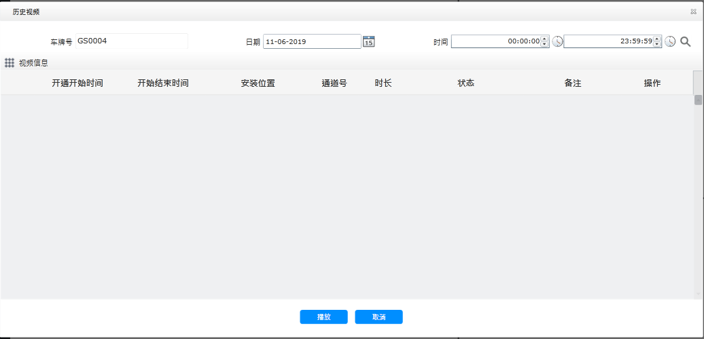
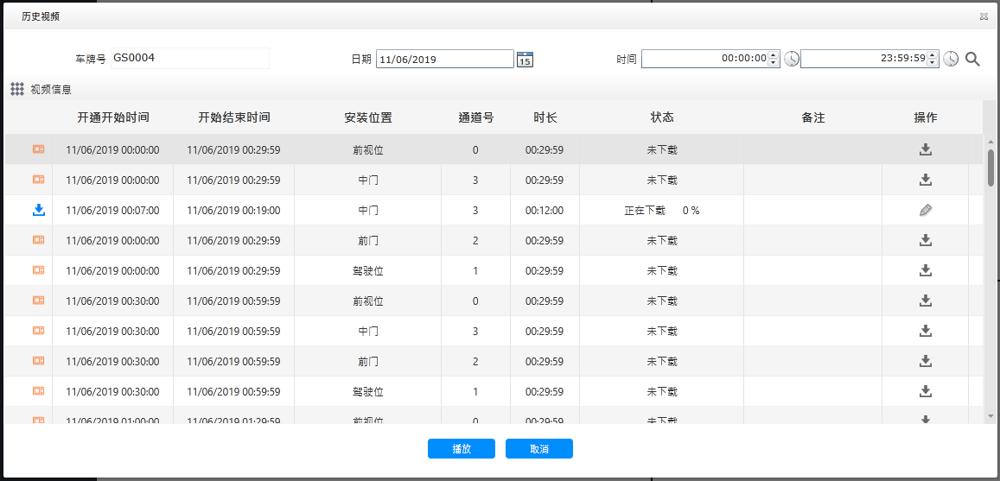

历史视频
历史视频主要实现对不同车辆服务器视频、MDVR视频、下载中视频进行查询、播放与管理。
| • | 视频分类 服务器视频：包括从设备上下载的视频；报警自动上传的视频；用户点播过的视频；
MDVR视频：保存在各安全套件SD卡的视频；
下载中视频：正在从MDVR下载到视频服务器的视频文件。
|
| • | 视频下载 将车辆安全套件MDVR上频下载到视频服务器；
将视频服务器上的视频下载到本地。
|
| 1. | 逐级展开左侧的车辆列表导航，查找到要查看视频的车辆，单击右侧〖 
Fig 81 历史视频窗口 |
| 2. | 选择要查看的时间范围，单击〖 
Fig 82 历史视频选择窗口 （1）不同类型视频采用不同颜色标识。
（2）单击〖
|